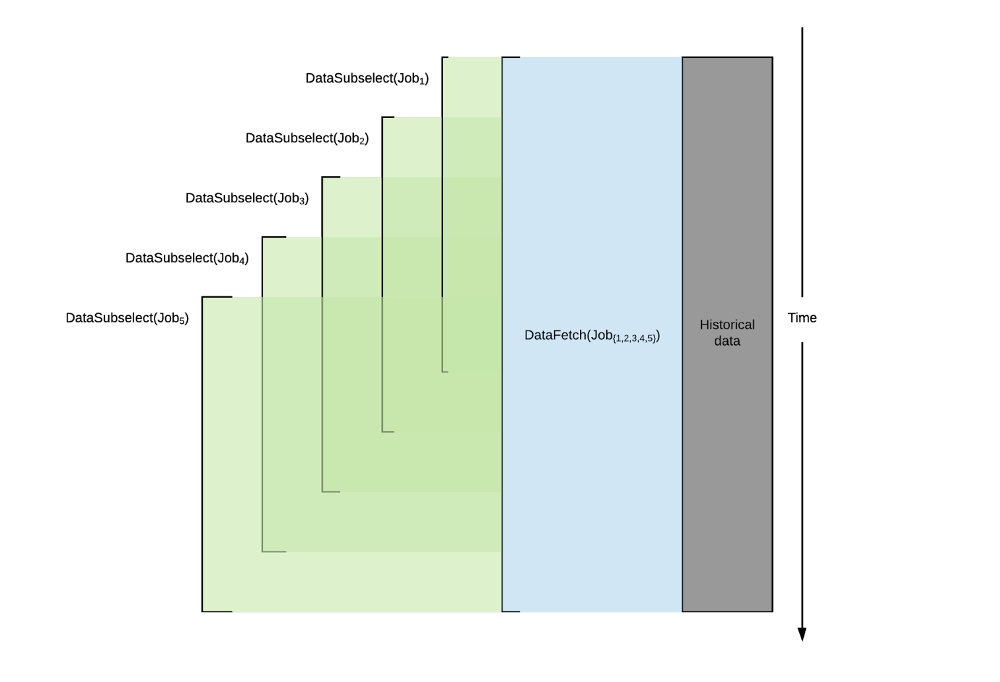
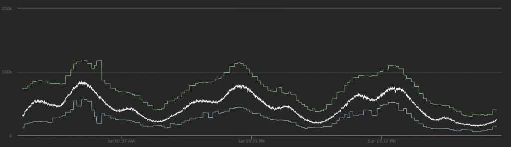

Jonathan Jin
Table of Contents
I am a NYC-based software engineer. I’m currently at Uber as a member of Observability Applications.
My resume can be found here.
Professional Interests
I’m interested in research engineering and machine learning infrastructure engineering positions.
More broadly, I’m especially interested in opportunities that operate at the intersection of research and engineering. To that end, the roles that most excite me provide opportunities to explore my interests in AI/ML; how they might be implemented or productized both scalably and performantly; and bring those research and modelling findings into production.
If you and your team are working on projects that I’d make a good addition for, let’s talk.
Research Interests
My research interests lie in the fields of machine learning, knowledge representation, and decision theory.
Specifically, I am drawn to the following questions:
- What is knowledge? What does it mean to know something? Can a machine that achieves near-human performance at some task be said to truly know and understand that task beyond a behavioristic interpretation thereof?
- How do we model and represent that knowledge to achieve precision, recall, and performance on par with – possibly even beyond – humans?
- Traditional machines reason with “explicit” logic – conditionals, pattern-matching, etc. How can we, as engineers, design and implement systems that can reason about ambiguity and uncertainty?
Writing
Engineering a Job-based Forecasting Workflow for Observability Anomaly Detection
Read the article on the Uber Engineering Blog here.
My major project of early 2018 revolved around overhauling Observability Anomaly Detection’s forecasting workflow to allow for performant forecast backfilling. In this article, I discuss the product-centric motivations for doing so, outline the primary performance bottlenecks, and discuss the design that the team decided to base our solution – and all subsequent optimizations – around.

Implementing Model-Agnosticism in Uber’s Real-Time Anomaly Detection Platform
Read on the Uber Engineering Blog here.
One of my first sizeable projects at Uber Observability was implementing support for multiple forecasting models in our anomaly detection pipeline. The pre-existing architecture was built around a single-model assumption that stored forecasting results in a single, top-level mapping; this data model made it cumbersome to add in support for new forecasting models later down the line, as our team attempted to do shortly after I joined.

In this article, I give a brief overview of anomaly detection within Uber’s Observability stack; detail the thought process that went into my design for a “model-agnostic” data model to extend the pre-existing one; as well as the resulting rollout strategy.

Contact
- GitHub
- github.com/jinnovation
- linkedin.com/in/jinnovation
- <first initial><last name>082693<at>gmail.com